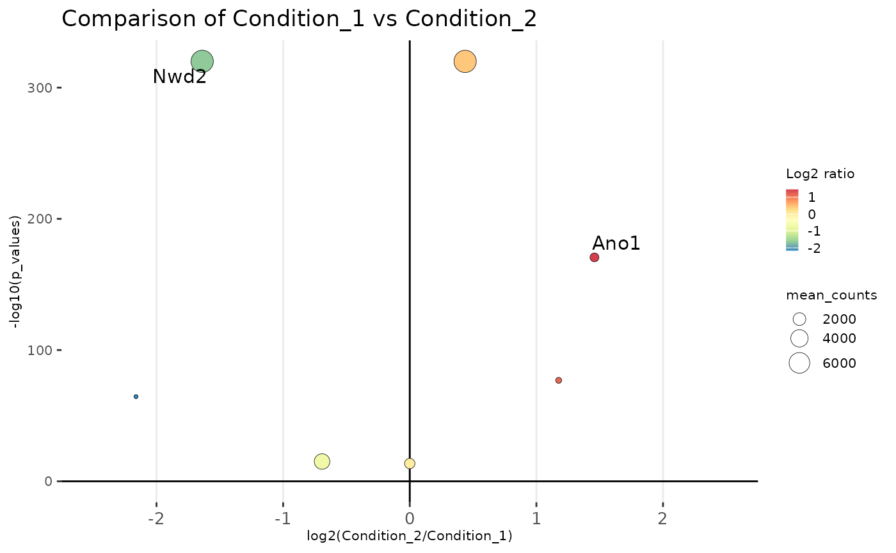

R/visualization.R
cmp_volcano.RdCreate a boxplot/jitter plot to show molecule counts distribution.
cmp_volcano(
object,
y_axis = c("p_values", "padj"),
x_lim = c(-2.5, 2.5),
colors = rev(RColorBrewer::brewer.pal(7, "Spectral")),
text_y_lim = 100,
text_x_lim = 1,
text_size = 4,
title = NULL,
max.overlaps = 10
)A STCompR object.
Character vector specifying the y-axis variable. Options are "p_values" or "padj".
Numeric vector specifying the x-axis limits. Default is c(-2.5, 2.5).
Color palette for the plot. Default is RColorBrewer::brewer.pal(7, "Spectral").
Numeric value specifying the threshold for feature labels on the y-axis. Genes with -log10(p-value) less than this threshold will not be labeled. Default is 100.
Numeric value specifying the threshold for feature labels on the x-axis. Genes with absolute x-values less than this threshold will not be labeled. Default is 2.
Numeric value specifying the size of text labels in the plot. Default is 5.
A title for the diagram.
The maximum number of label overlaps.
example_dataset("11284296/files/cmp_xen")
#> |-- INFO : Dataset 11284296/files/cmp_xen was already loaded.
cmp_xen
#> |-- INFO : An object of class STCompR
#> |-- INFO : xen_r1 Condition_1
#> |-- INFO : xen_r2 Condition_2
#> |-- INFO : Number of features: 7
#> |-- INFO : >>> Please, use show_st_methods(class = 'STCompR') to show availables methods <<<
cmp_volcano(cmp_xen)
